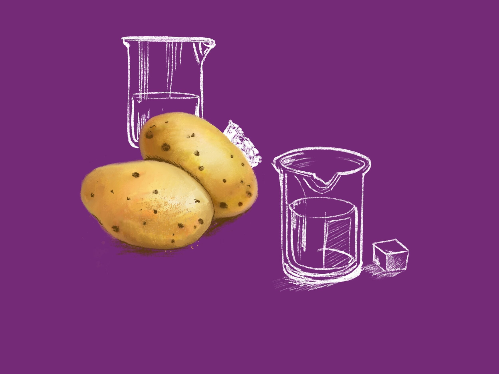

OSMOSIS EXPERIMENT

OBJECTIVES The objective of this experiment is to observe the process of osmosis and its effects on
plant cells by using potato slices in different concentrations of saltwater.
MATERIALS REQUIRED
2 medium sized potatos(plant cells)
Common salt (NaCl)
Distilled water
knife/blade
2 petri dish/bowl
Timer
PROCEDURE
Using the knife, cut the potatoes into equal-sized pieces (approximately 1 inch thick) to ensure
uniformity.
In one bowl, prepare a hypertonic solution by mixing 1 cup of distilled water with 2 tablespoons of
salt (NaCl).
Place one potato piece in the hypertonic saltwater solution and the other in a bowl of plain
distilled water (hypotonic solution).
Allow the potato pieces to sit for 30 minutes.
After 30 minutes, remove the potato pieces and observe any changes in size, texture, and firmness.
Observations
During the experiment, observe the following:
The potato in the hypertonic solution (saltwater) may feel softer and decrease in size due to
plasmolysis .
The potato in the hypotonic solution (plain water) may feel firmer and increase in size due to
turgor pressure .
Note the differences in texture, firmness, and overall appearance between the two potato pieces
Conclusion
This experiment illustrates the process of osmosis, where water molecules move across a selectively
permeable membrane (the potato cell membrane) from an area of lower solute concentration (hypotonic
solution) to an area of higher solute concentration (hypertonic solution). The potato in the plain water
swells due to water intake, demonstrating turgor pressure, while the potato in saltwater loses water,
leading to plasmolysis and a softer texture.
Applications of Osmosis in Daily Life
Osmosis has several practical applications in our daily lives, including:
Food Preservation: Salting meat and fish creates a hypertonic environment, drawing
out moisture and inhibiting bacterial growth.Plant Health: Understanding osmosis helps in watering plants; over-salting soil can
harm plants by causing plasmolysis.Medical Uses: Osmosis is crucial in IV fluids for patients, ensuring proper
hydration and electrolyte balance.Kidney Function: The kidneys use osmosis to filter blood and maintain fluid balance
in the body.Cooking: When vegetables are soaked in saltwater, they lose water and can become
more flavorful as they absorb seasonings.